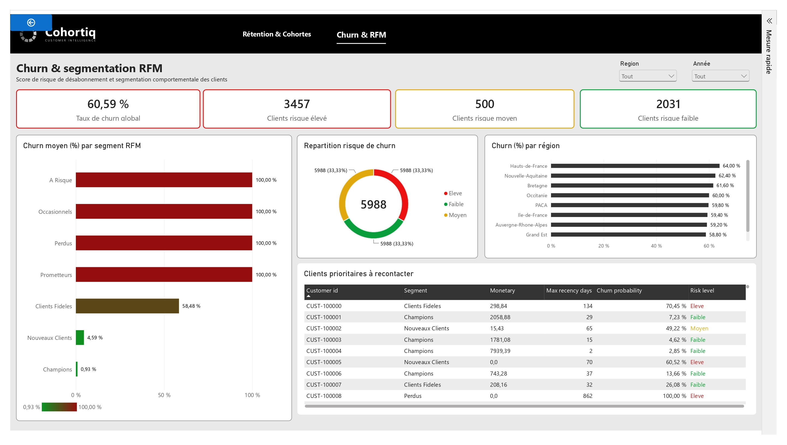
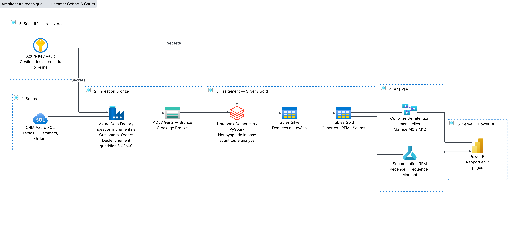

Pipeline Azure Data Factory + Databricks pour une base CRM de 5 988 clients : analyse de rétention par cohortes, segmentation RFM et scoring de churn par Machine Learning, restitués dans Power BI Azure Data Factory + Databricks pipeline for a 5,988-customer CRM base: cohort retention analysis, RFM segmentation and Machine Learning churn scoring, delivered through Power BI
Voir la documentation complète (PDF) View Full Documentation (PDF)
L'équipe CRM d'une entreprise e-commerce constatait un taux d'attrition élevé sans en comprendre les leviers. J'ai reproduit ce scénario de bout en bout : ingestion quotidienne de 5 988 clients et 56 851 commandes depuis un CRM Azure SQL, construction de cohortes mensuelles de rétention, segmentation RFM (Récence, Fréquence, Montant) et entraînement d'un modèle de régression logistique pour prédire le churn à 90 jours, restitués dans un rapport Power BI à 3 pages. An e-commerce company's CRM team observed high customer attrition without understanding its drivers. I reproduced this scenario end to end: daily ingestion of 5,988 customers and 56,851 orders from an Azure SQL CRM, building monthly retention cohorts, RFM segmentation (Recency, Frequency, Monetary), and training a logistic regression model to predict 90-day churn, delivered in a 3-page Power BI report.

Rapport Power BI « Customer Cohort & Churn » – Matrice de rétention par cohorte mensuelle (14 dernières cohortes) "Customer Cohort & Churn" Power BI report – Monthly cohort retention matrix (last 14 cohorts)
Un notebook Databricks nettoie la base CRM avant toute analyse — complétude à 100% sur les tables finales, avec quarantaine systématique des lignes non conformes. A Databricks notebook cleans the CRM base before any analysis — 100% completeness on the final tables, with systematic quarantine of non-compliant rows.
Matrice de rétention M0 à M12 sur 14 cohortes mensuelles glissantes : M0 to M12 retention matrix across 14 rolling monthly cohorts:
Gold cohort_retention → matrice M0-M12 par mois d'inscription

7 segments RFM et modèle prédictif de risque de churn : 7 RFM segments and a predictive churn-risk model:
Régression logistique — AUC-ROC 0,947 · Précision 93,7% · Rappel 85,2%
Le modèle de régression logistique est évalué sur un échantillon test
out-of-time de 1 420 clients (T0 = 27/05/2026), avec une fenêtre de prédiction de
90 jours. La variable la plus influente est recency_days
(coefficient 4,808) : plus un client n'a pas commandé récemment, plus son risque de churn augmente
fortement — cohérent avec la définition métier du churn (> 90 jours sans commande).
The logistic regression model is evaluated on an out-of-time test sample of
1,420 customers (T0 = 2026-05-27), with a 90-day prediction window.
The most influential feature is recency_days (coefficient 4.808): the longer since a
customer's last order, the sharper the rise in churn risk — consistent with the business definition
of churn (> 90 days without an order).
AUC-ROC de 0,947 et CLV moyen de 720,08 € sur la base active 0.947 AUC-ROC and €720.08 average CLV across the active base

Architecture médaillon Azure + Databricks + Power BI, orchestrée quotidiennement par Azure Data Factory Azure + Databricks + Power BI medallion architecture, orchestrated daily by Azure Data Factory
 Databricks
PySpark
Databricks
PySpark Power BI
Power BISuivi de rétention fiabilisé sur 14 cohortes mensuelles, avec un CLV moyen de 720,08 € et un panier moyen de 75,84 €. Reliable retention tracking across 14 monthly cohorts, with an average CLV of €720.08 and an average basket of €75.84.
Identification proactive de 3 457 clients à risque élevé grâce à un modèle atteignant 0,947 d'AUC-ROC. Proactive identification of 3,457 high-risk customers via a model reaching 0.947 AUC-ROC.
Complétude de 100% sur les tables finales grâce à la quarantaine automatique des doublons, orphelines et valeurs invalides. 100% completeness on final tables through automatic quarantine of duplicates, orphans and invalid values.